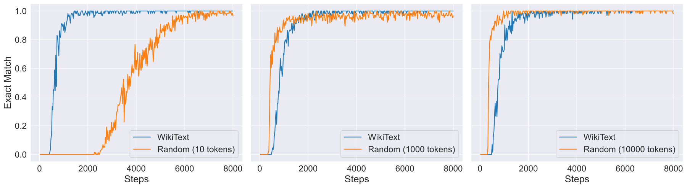
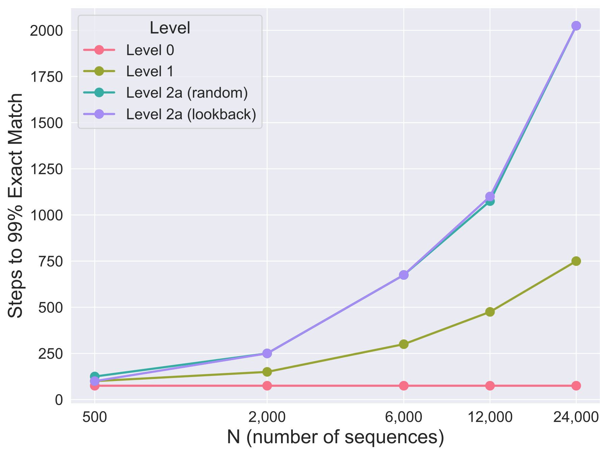
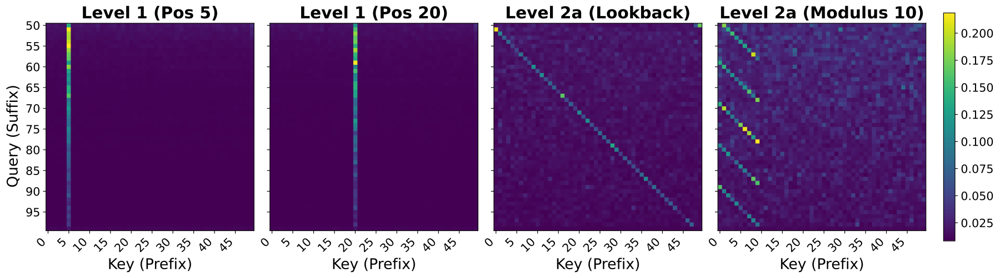
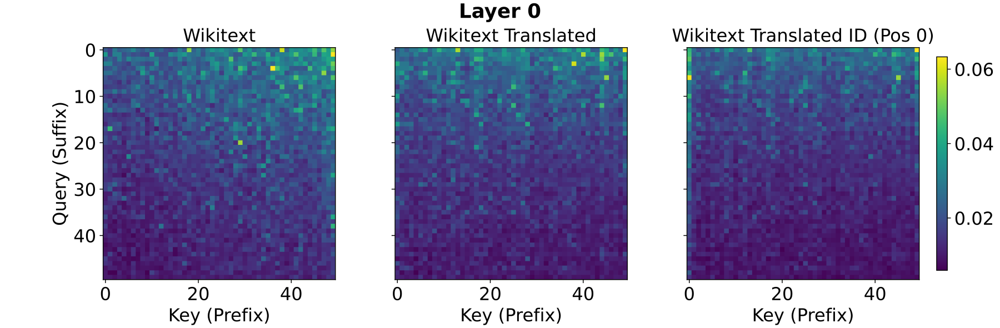
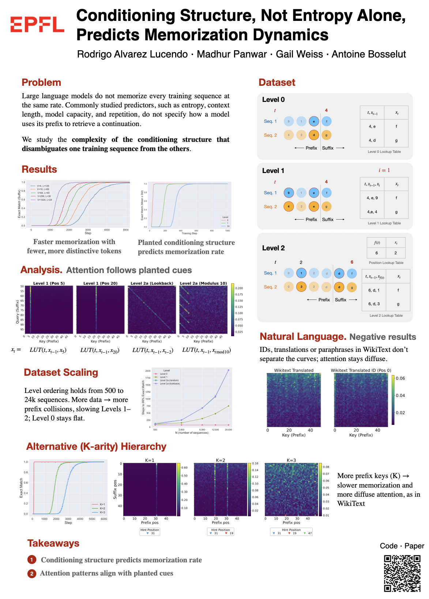

Level 0
Local transition
xt = LUT(xt−1, t)
| suffix position t | 6 | 7 | 8 |
|---|---|---|---|
| prefix cue | – | – | – |
Each suffix token is set by the token right before it and its position. Nothing in the prefix has to be looked up.
In controlled GPT-2-style experiments, datasets with the same total number of information bits, arranged differently, showed different memorization rates. The rates followed the complexity of the conditioning structure that disambiguates one training sequence from the others.
Abstract
Autoregressive language models do not memorize every training sequence at the same rate; yet, commonly studied predictors, such as entropy, tokenization, context length, model capacity, and repetition, do not specify how a model uses its prefix to retrieve a continuation. We study a complementary axis: the complexity of the conditioning structure that disambiguates one training sequence from the others.
In controlled GPT-2-style experiments, uniformly random prefixes with the same total information content are easier to use when their information is concentrated into fewer, more distinctive tokens. We construct synthetic datasets whose suffixes are deterministic under rules of increasing complexity: a local position-aware transition, a fixed prefix cue, or a position-dependent prefix cue. The resulting memorization curves preserve this ordering across one- and four-layer models and across dataset sizes from 500 to 24,000 sequences. In one-layer models, attention patterns visibly follow the planted cue locations. However, analogous interventions on WikiText yield no detectable separation, due to other interfering natural language cues. These results support disambiguation complexity as a useful controlled axis for studying memorization and, more broadly, training dynamics.
Method
We view memorization as retrieving a continuation from cues in its prefix. A sequence is memorized when greedy decoding from its prefix reproduces the entire suffix (exact match). To memorize it, the model has to find positions in the prefix that tell this sequence apart from every other training sequence.
We plant that structure on purpose. Each dataset has random 50-token prefixes, and every suffix token is set by a lookup table (LUT) whose key follows one of three rules of increasing complexity. Each card follows the same short sequence: colored arrows come from the prefix cue a suffix token needs, and gray arrows from the previous token, which every level uses.
| suffix position t | 6 | 7 | 8 |
|---|---|---|---|
| prefix cue | – | – | – |
Each suffix token is set by the token right before it and its position. Nothing in the prefix has to be looked up.
| suffix position t | 6 | 7 | 8 |
|---|---|---|---|
| prefix cue F | 2 | 2 | 2 |
Every suffix token also needs the token at one fixed prefix position (here F = 2), so all colored arrows start at the same token. In attention, this shows up as a vertical band.
| suffix position t | 6 | 7 | 8 |
|---|---|---|---|
| prefix cue f(t) | 3 | 1 | 4 |
Each suffix token needs a different prefix position, f(t), so the colored arrows start somewhere new for every t and the model must learn where to look each time. In attention, the pattern follows f(t): for example, the lookback rule gives a diagonal and the modulo rule a periodic pattern.
Results
In the mixed WikiText/random setting of Panwar et al. (2025), structured WikiText is memorized before random sequences over a 10-token vocabulary. Raise the random vocabulary to 1,000 or 10,000 tokens and the order flips: random sequences reach exact recall first.
Holding total prefix information fixed at 240 bits (Fig. a above) makes the point directly. A larger vocabulary with a shorter prefix is memorized earlier, since the per-position collision probability falls from 1/4 to 1/1024. Distinctiveness and length move together by design here, but total prefix bits alone cannot be a sufficient predictor.

Level 0 is learned first, then Level 1, then Level 2 (Fig. b above). Smaller one-layer models keep the same order, with slower memorization and a wider gap between Levels 1 and 2.
The order also holds as the dataset grows from 500 to 24,000 sequences. With vocabulary size 100, a fixed prefix position is shared by about N/100 sequences, so Levels 1 and 2 must resolve more and more colliding examples while Level 0 never reads the prefix.

In a one-layer transformer, attention is the only operation that mixes positions, so its maps show where the model reads its cue. A fixed Level 1 cue at position 5 or 20 produces a sharp vertical band. The Level 2 lookback rule produces a diagonal, and the modulo rule a periodic pattern: each map mirrors the rule that generated the data.

Attention is a diagnostic here, not a causal proof. Head ablations or activation patching are left to future work.
Instead of where the cue is, vary how many prefix tokens it takes. Each suffix token is a lookup of K distinct prefix positions plus the current position, xt = LUT(xφ1(t), …, xφK(t), t). With 20,000 sequences and vocabulary size 100, steps to exact recall follow K = 1 < K = 2 < K = 3.
With fixed key positions, attention concentrates on one column for K = 1 and splits across two for K = 2. At K = 3 it turns diffuse: finite-sample collisions can make a smaller subset sufficient, and the model may exploit correlations outside the designated keys.
We tried four groups of WikiText interventions: a unique token at a fixed position, translated prefixes with and without a fixed identifier, Latin-family versus diverse multilingual groups, and paraphrased passages. The exact-match curves mostly overlapped.
Natural text carries many redundant lexical, syntactic and semantic cues. An inserted identifier can be sufficient in theory yet irrelevant to the strategy the optimizer picks, and attention stays diffuse. Translation also changes tokenization length, effective vocabulary and prefix entropy at once. Validating the framework on natural language is future work, and we welcome feedback on it.

Takeaways

Poster
The poster summarizes the problem, the three conditioning levels, the main results, and the attention analysis on one page.
Citation
@inproceedings{alvarezlucendo2026conditioning,
title = {Conditioning Structure, Not Entropy Alone, Predicts Memorization Dynamics},
author = {Alvarez Lucendo, Rodrigo and Panwar, Madhur and Weiss, Gail and Bosselut, Antoine},
booktitle = {NeurIPS 2026 Workshops},
year = {2026}
}